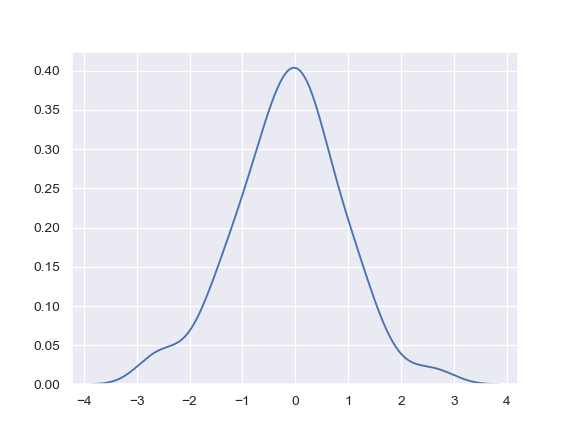
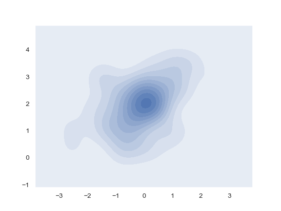

seaborn.kdeplot¶
-
seaborn.kdeplot(data, data2=None, shade=False, vertical=False, kernel='gau', bw='scott', gridsize=100, cut=3, clip=None, legend=True, cumulative=False, shade_lowest=True, cbar=False, cbar_ax=None, cbar_kws=None, ax=None, **kwargs)¶ Fit and plot a univariate or bivariate kernel density estimate.
- Parameters
- data1d array-like
Input data.
- data2: 1d array-like, optional
Second input data. If present, a bivariate KDE will be estimated.
- shadebool, optional
If True, shade in the area under the KDE curve (or draw with filled contours when data is bivariate).
- verticalbool, optional
If True, density is on x-axis.
- kernel{‘gau’ | ‘cos’ | ‘biw’ | ‘epa’ | ‘tri’ | ‘triw’ }, optional
Code for shape of kernel to fit with. Bivariate KDE can only use gaussian kernel.
- bw{‘scott’ | ‘silverman’ | scalar | pair of scalars }, optional
Name of reference method to determine kernel size, scalar factor, or scalar for each dimension of the bivariate plot. Note that the underlying computational libraries have different interperetations for this parameter:
statsmodelsuses it directly, butscipytreats it as a scaling factor for the standard deviation of the data.- gridsizeint, optional
Number of discrete points in the evaluation grid.
- cutscalar, optional
Draw the estimate to cut * bw from the extreme data points.
- clippair of scalars, or pair of pair of scalars, optional
Lower and upper bounds for datapoints used to fit KDE. Can provide a pair of (low, high) bounds for bivariate plots.
- legendbool, optional
If True, add a legend or label the axes when possible.
- cumulativebool, optional
If True, draw the cumulative distribution estimated by the kde.
- shade_lowestbool, optional
If True, shade the lowest contour of a bivariate KDE plot. Not relevant when drawing a univariate plot or when
shade=False. Setting this toFalsecan be useful when you want multiple densities on the same Axes.- cbarbool, optional
If True and drawing a bivariate KDE plot, add a colorbar.
- cbar_axmatplotlib axes, optional
Existing axes to draw the colorbar onto, otherwise space is taken from the main axes.
- cbar_kwsdict, optional
Keyword arguments for
fig.colorbar().- axmatplotlib axes, optional
Axes to plot on, otherwise uses current axes.
- kwargskey, value pairings
Other keyword arguments are passed to
plt.plot()orplt.contour{f}depending on whether a univariate or bivariate plot is being drawn.
- Returns
- axmatplotlib Axes
Axes with plot.
See also
Examples
Plot a basic univariate density:
>>> import numpy as np; np.random.seed(10) >>> import seaborn as sns; sns.set(color_codes=True) >>> mean, cov = [0, 2], [(1, .5), (.5, 1)] >>> x, y = np.random.multivariate_normal(mean, cov, size=50).T >>> ax = sns.kdeplot(x)
Shade under the density curve and use a different color:
>>> ax = sns.kdeplot(x, shade=True, color="r")

Plot a bivariate density:
>>> ax = sns.kdeplot(x, y)

Use filled contours:
>>> ax = sns.kdeplot(x, y, shade=True)
Use more contour levels and a different color palette:
>>> ax = sns.kdeplot(x, y, n_levels=30, cmap="Purples_d")

Use a narrower bandwith:
>>> ax = sns.kdeplot(x, bw=.15)

Plot the density on the vertical axis:
>>> ax = sns.kdeplot(y, vertical=True)

Limit the density curve within the range of the data:
>>> ax = sns.kdeplot(x, cut=0)

Add a colorbar for the contours:
>>> ax = sns.kdeplot(x, y, cbar=True)

Plot two shaded bivariate densities:
>>> iris = sns.load_dataset("iris") >>> setosa = iris.loc[iris.species == "setosa"] >>> virginica = iris.loc[iris.species == "virginica"] >>> ax = sns.kdeplot(setosa.sepal_width, setosa.sepal_length, ... cmap="Reds", shade=True, shade_lowest=False) >>> ax = sns.kdeplot(virginica.sepal_width, virginica.sepal_length, ... cmap="Blues", shade=True, shade_lowest=False)